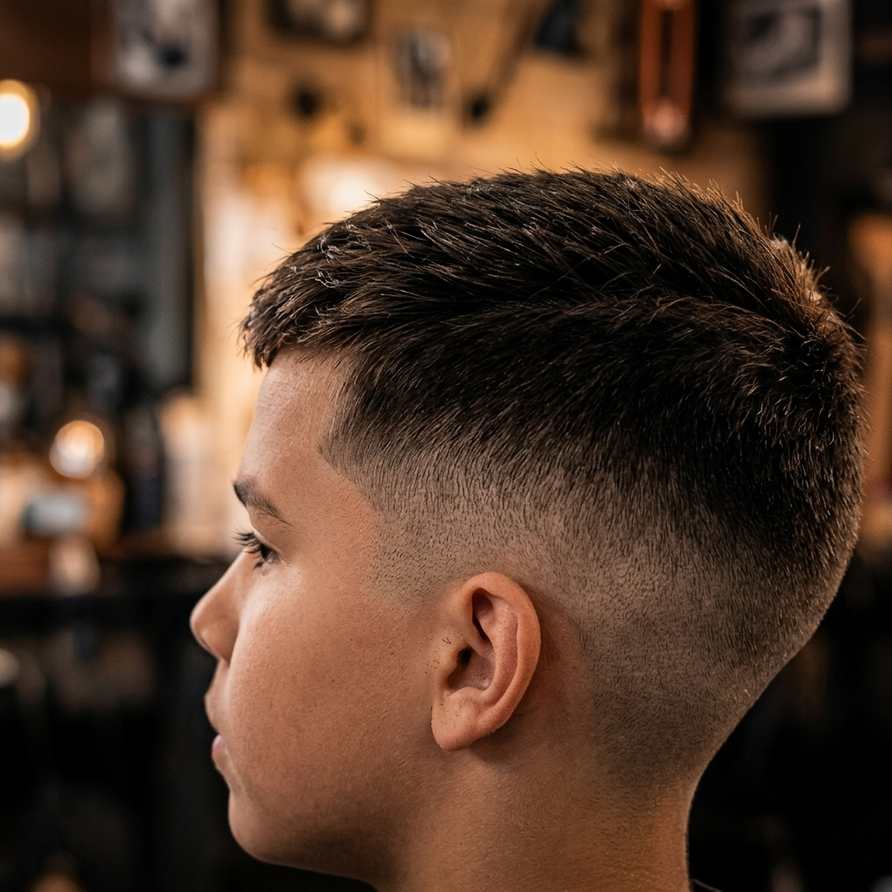
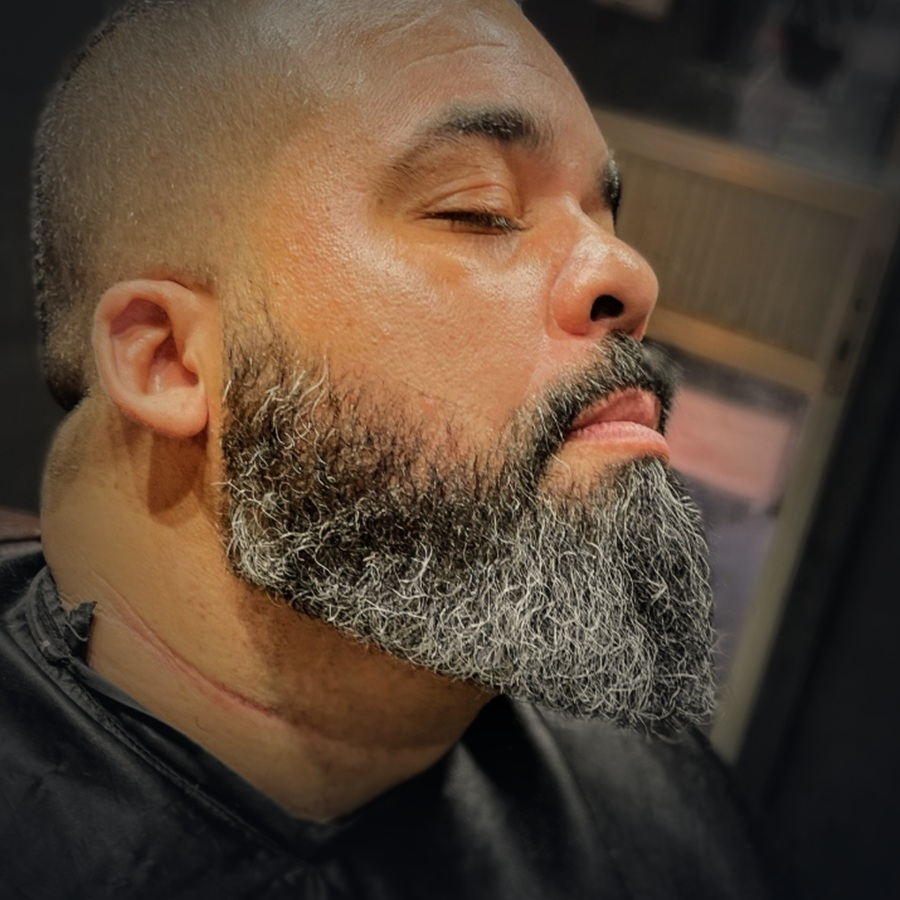

CENTRAL DE ESTILO & TRADIÇÃO NA LEOPOLDINA
Blog A Barbearia É Nossa
Guias diretos ao ponto sobre cortes de cabelo masculino, degradê, cuidados com a barba e atendimento infantil para quem vive na Penha, Brás de Pina, Olaria e região.
 CORTES & ESTILO CARIOCA
CORTES & ESTILO CARIOCA
5 min de leitura · Penha, RJ
Melhores Cortes Masculinos para o Calor do Rio de Janeiro
Enfrentar o verão carioca na Zona da Leopoldina pede um visual leve, prático e alinhado. Conheça os cortes masculinos mais pedidos na Penha, Brás de Pina e Olaria.
 TÉCNICA & VISAGISMO
TÉCNICA & VISAGISMO
4 min de leitura · Penha, RJ
Degradê Navalhado vs. Fade Tradicional: Qual Escolher?
Na hora de sentar na cadeira do barbeiro, surge sempre a dúvida: fazer o disfarce na zero alta ou passar a navalha? Veja as vantagens de cada técnica.

ATENDIMENTO INFANTIL & FAMÍLIA4 min de leitura · Penha, RJ
Barbearia Infantil na Penha e Olaria: Corte Sem Estresse
Cortar o cabelo das crianças exige paciência, ambiente acolhedor e mão leve. Veja por que famílias da Penha, Olaria e Brás de Pina trazem seus filhos há gerações.

BARBA & BARBOTERAPIA5 min de leitura · Penha, RJ
Como Manter a Barba Alinhada e Hidratada (Guia de Barbeiro)
Uma barba bem desenhada transforma o rosto masculino. Descubra como o alinhamento profissional e a toalha quente evitam irritações e deixam o visual impecável.
 HISTÓRIA & TRADIÇÃO NA PENHA
HISTÓRIA & TRADIÇÃO NA PENHA
4 min de leitura · Penha, RJ
Mais de 30 Anos na Penha: AForça da Barbearia Tradicional
Mais que um corte, um ponto de encontro de amigos e famílias na Penha. Entenda por que a tradição combinada à técnica moderna faz toda a diferença.